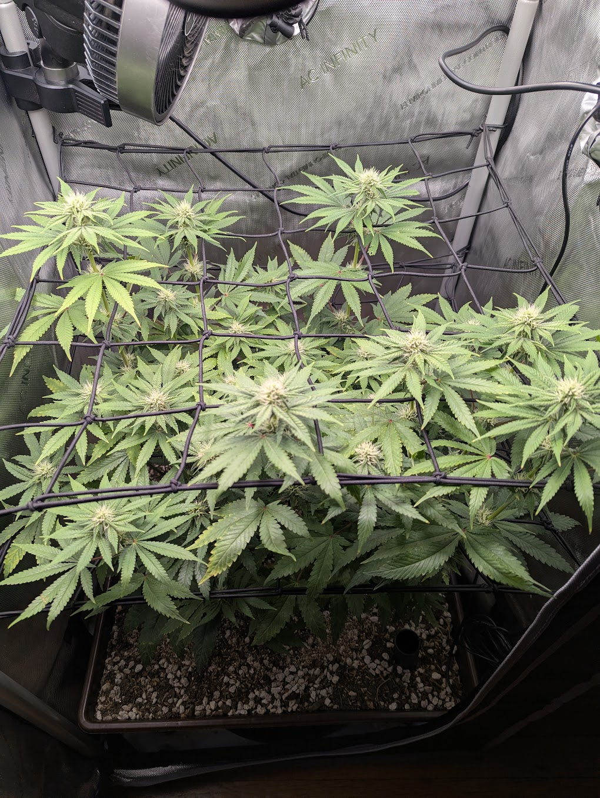
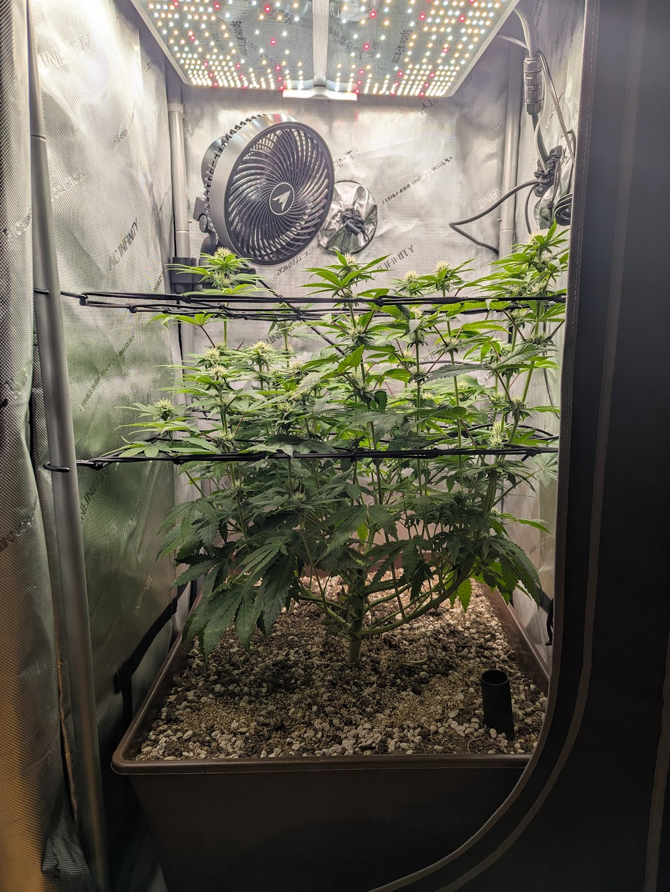
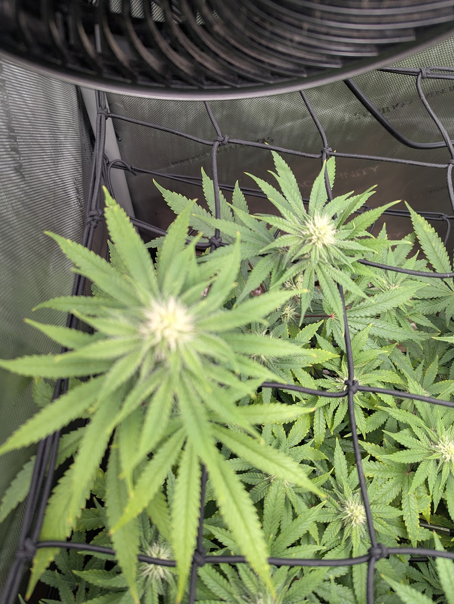
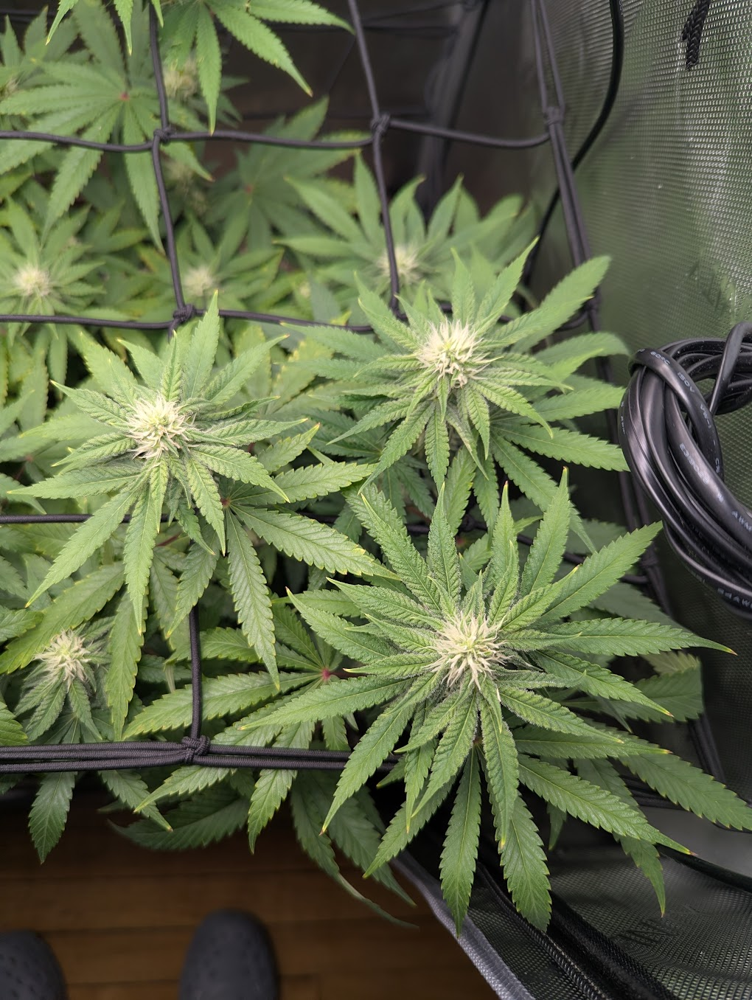
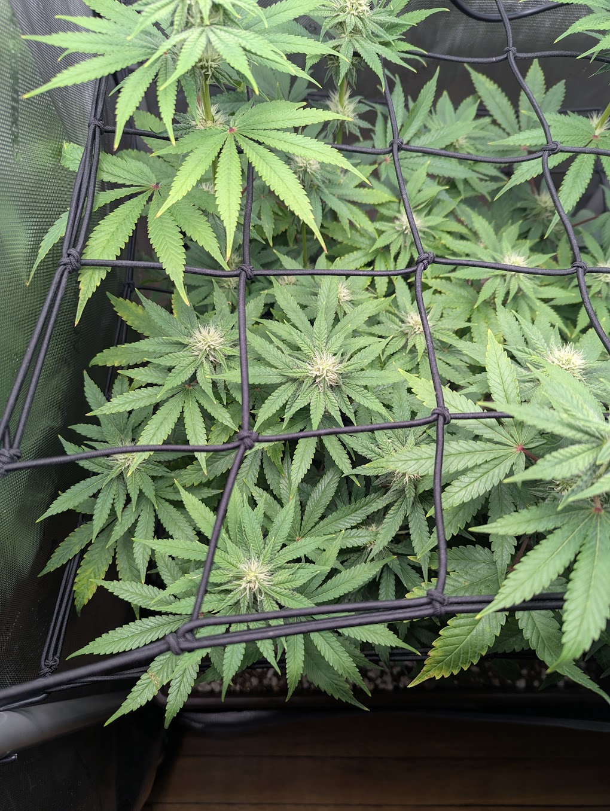
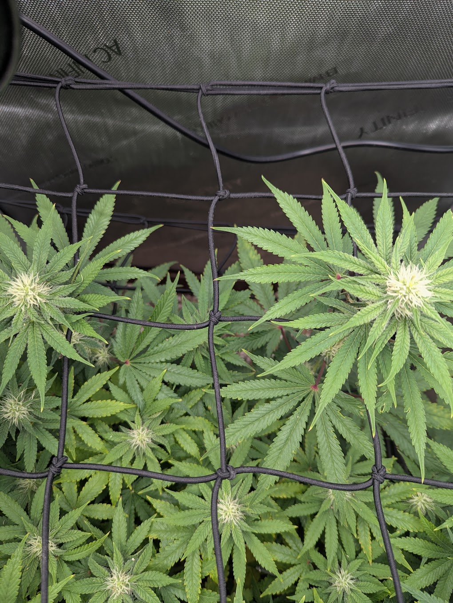
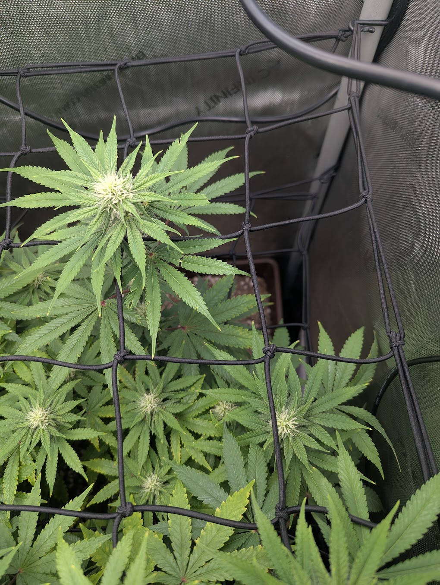

Manual multi-photo check-in · Sunday, June 28, 2026 · compared against 6/24
Strain: Papaya Crush (photoperiod)Stage: Flower, day ~25 (flipped 6/3)Age: ~9 weeks from germ (4/28)Tent: 2×2 AC Infinity · SF-2000 ProMedium: Living soil, no-till
Healthy · improving
Four days on from 6/24, the plant is still improving. Every one of the seven matched photo pairs came back clean: pistil counts are up and the tops are fattening and starting to frost, color is a uniform deep green top-to-bottom, posture is turgid with no droop, and the second scrog net is now doing its job — colas are woven into an even, horizontal plane across the whole footprint. The 6/22 light-stress tip burn remains static on the old leaves and is not advancing into new growth. No pests, no deficiencies, nothing to treat. The one routine item is water: you're at the end of the ~4-day cadence off the 6/24 bottom-feed, so it's about due.
1 · What you asked for
TLDR — Another manual close-up check-in. Match this 6/28 photo set to its 6/24 counterparts, then run each pair through Claude individually (the same per-tile approach used for the daily quadrant reports), and say whether the plant is doing OK, improving, or declining. Photos submitted: canopy overview, side profile, then bottom-left, top-left, top-middle, top-right, and bottom-right close-ups.
Show full original prompt
i've also done "manual" reports where i submit up close pics from my phone....last one was on june 24...let's do another one..check out the format of the previous report...encode the prompt etc...first image is of the canopy [canopy] second image is a side image [side] bottom left of plant [bottom-left] next image is top-left [top-left] next image is top middle [top-middle] next image is top right [top-right] next image is bottom right [bottom-right] ..next is a center shot....see if you can match the photos from this submission to the previous one and then submit to claude per image pair..just like we did with the daily/quadrants...anywho...proceed
Note: a "center" shot was described but did not attach, so this report covers the 7 images that came through.
2 · Snapshot

Canopy overviewOK — even fill across the net, tops fattening

Side profileOK — upright, turgid, stacking through both nets

Top-leftOK — denser pistils, clean new growth under fan

Bottom-rightOK — frosting tops, old tip burn static only
3 · 6/24 → 6/28, side by side
Signal
6/24 (day ~21)
6/28 (day ~25)
Trend
Pistils / bud sites
More pistils, tops starting to fatten
Denser pistils, tops fattening further with early frost
↑ better
Leaf color
Uniform deep green
Same uniform deep green, no fade
→ steady
Tip burn (light stress)
Existing tips static; not spreading
Still static; new growth above the marks is clean
↑ resolved
Canopy structure
Second net installed, tops being woven
Tops woven into an even horizontal plane across the net
↑ better
Posture / turgor
Turgid, no droop/claw
Same — turgid, flat, no wilt
→ steady
Pests
No stippling/webbing in close-ups
Still clean across all 7 close-ups
→ clear
Top PPFD
~850 tops / ~700 center (after +10%)
No change reported this submission
→ unchanged
4 · Per-pair analysis
Each current photo was matched to its closest 6/24 frame and the pair was analyzed on its own. All seven came back OK — the findings below are the consistent signal across regions.
Canopy overviewOK — distinct tops filling each scrog square, fresh white pistils, tightening cores; even build-out vs 6/24.Side profileOK — healthy upright posture, denser vertical fill between the two net layers; color even top to bottom.

Bottom-leftOK — fatter flower clusters with more pistils; net seated and colas tucked up; flat, turgid leaves.Top-leftOK — bract swelling and more pistils at center/upper-right; new growth at the cola tips is clean.

Top-middleOK — right-side cola noticeably fatter/denser; tips and margins clean, no bleaching or tacoing.

Top-rightOK — main cola and lower sites forming tight tops with fresh pistils; uniform green, net spreading the colas.Bottom-rightOK — several frosting tops with denser pistil clusters; a few old fan-leaf tips marked but not spreading.
The leaf tips you were watching
The 6/22 tip damage is still visible on the same older upper leaves in the canopy, bottom-right, and overview frames, but it is not advancing — every region shows clean new growth above the marks. That tissue won't heal (it's spent), so judge the fix by the fresh tips, which look good across all seven photos. This is the confirmation the 6/22–6/24 light correction held.
The red/purple petioles and pink bract flecks remain the Papaya Crush genetic trait (consistent since the 6/17 annotation), not a phosphorus issue. No action.
Flags checked
Growth progressing
More pistils and fattening, frosting tops vs. 6/24 in every region. No stall — clear flower development over the 4-day gap.
Light holding
Tip burn stayed static and did not spread to new growth. No new bleaching or tacoing on the top colas. No light change was reported this submission; tops still ~850 from the 6/24 setup — this stays the one number to watch.
Canopy even
Second scrog net is now fully doing its job — tops woven into a flat, horizontal plane across the whole footprint.
Pests clear
No stippling, webbing, or bugs in any of the seven close-ups. Green Cleaner rotation continues to hold.
Nutrients good
Deep uniform green, no deficiency pattern. The 6/20 flowering top-dress is still feeding.
Water about due
Last watering was 2 gal bottom-fed on 6/24. On the ~4-day cadence the next pour lands around today (6/28). Leaves are turgid (no wilt), so no stress yet — finger-check the soil and water if it's dry.
5 · Conclusion
Improving and on track. At day ~25 of flower the plant is a vigorous, pest-free Papaya Crush moving cleanly through early-to-mid flower, four days further along than the 6/24 baseline with visibly more pistil development and the first frost on the tops. The light correction is confirmed holding, the second net is filled and even, and nothing here needs treatment. The only live item is routine watering.
6 · Next actions
Water — about due — last bottom-fed 2 gal on 6/24; the ~4-day cadence puts the next pour around today. Finger-check soil moisture and water if dry.
Keep weaving the second net — tuck each rising cola through a square as the last of the stretch finishes.
Watch the tops — no light change reported, so hold ~850 at the tops; keep confirming new tips stay clean. If fresh growth starts crisping, drop a notch.